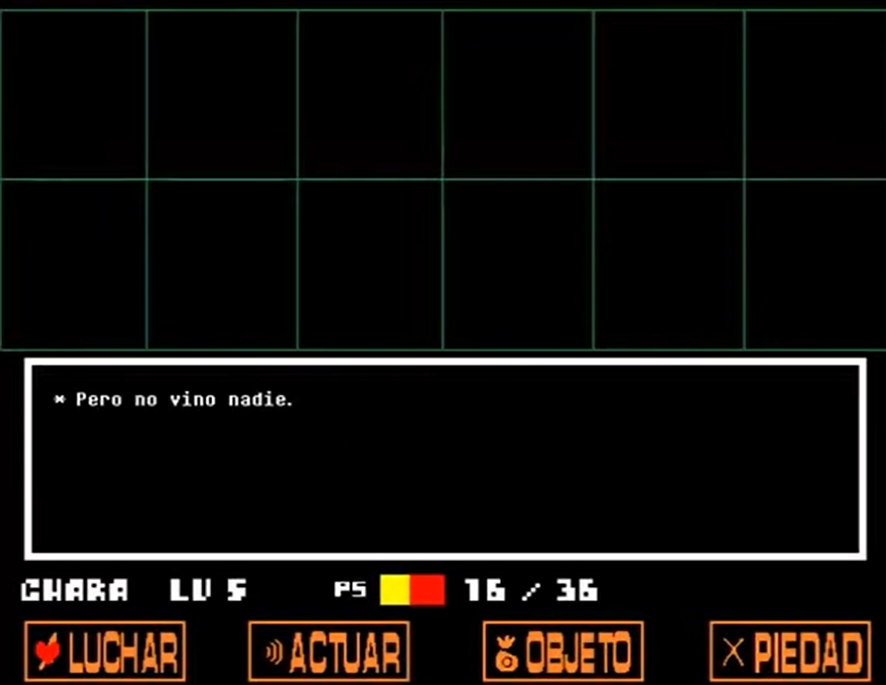
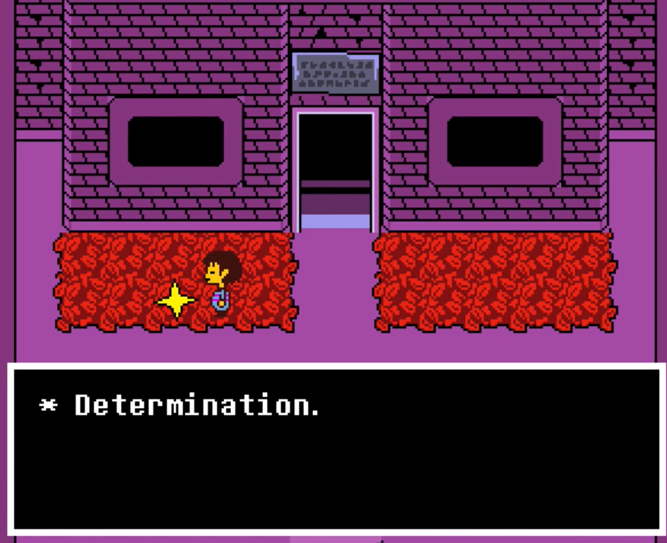
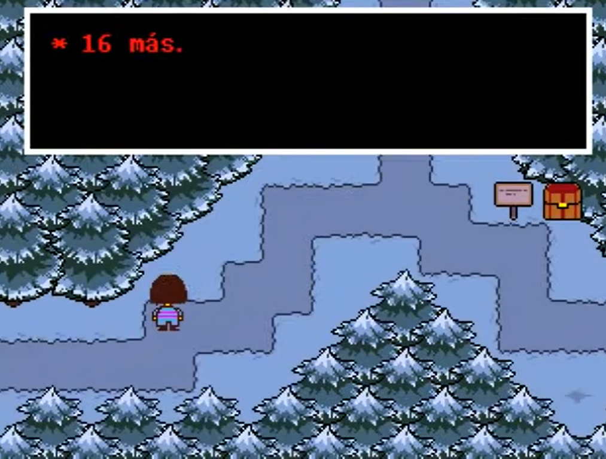
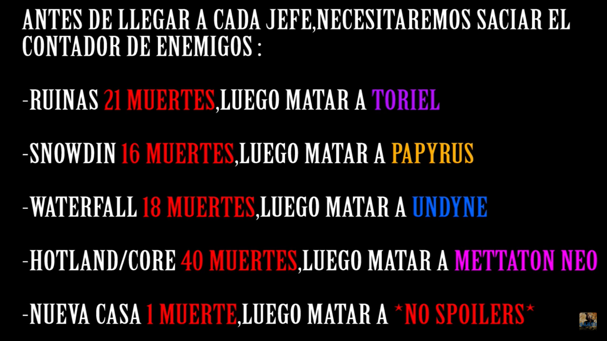
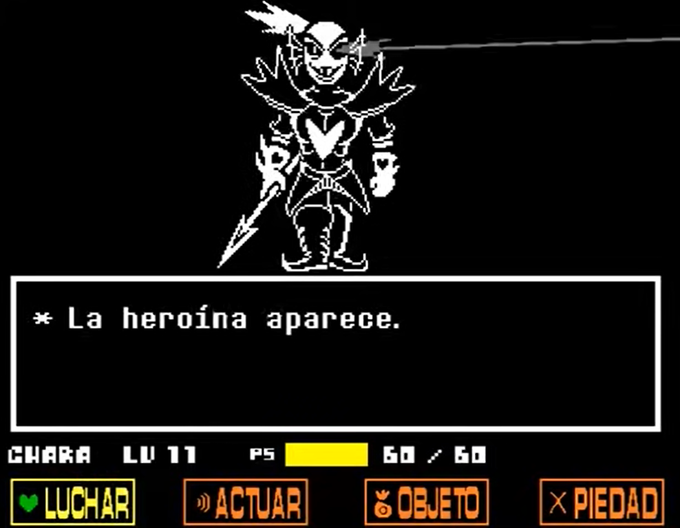
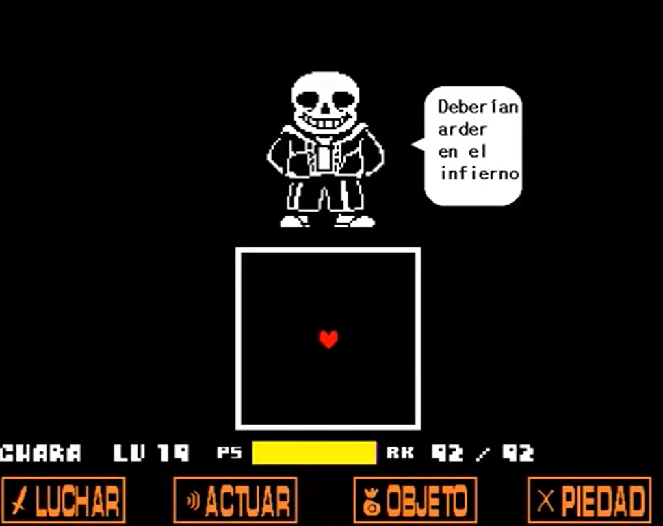
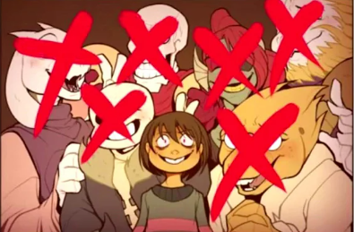

* bye humano....lamento que no seas diferente.
Ruta Genocida
La Ruta Genocida de Undertale es la más oscura y desafiante. En esta ruta, el jugador debe buscar y eliminar a todos los enemigos en cada área, dejando el mundo subterráneo completamente vacío. Esta ruta cambia drásticamente la historia y el comportamiento de los personajes, llevando a un final sombrío. La Ruta Genocida revela aspectos de la historia que no se ven en otras rutas y presenta algunos de los combates más difíciles del juego.
Especificaciones de la Ruta Genocida
- Condiciones Previas:
- Desde el inicio del juego, debes matar a todos los enemigos en cada área, incluyendo a los personajes principales.
- No puedes perdonar a ningún enemigo ni usar opciones pacifistas en las batallas.
- Desarrollo:
- Cada área tiene un número determinado de enemigos que debes eliminar antes de avanzar. Cuando el contador de enemigos llegue a cero, el mensaje "pero nadie vino..." aparecerá en los encuentros aleatorios tambien cada que guardes y allas matado los enemigos dichos aparecera el mensaje de determinación.
- Una vez que hayas matado a todos los enemigos en un área, la música cambiará a un tono más sombrío y el ambiente se volverá más oscuro y desolado.

- Eventos Clave:
- Ruinas: Mata a todos los enemigos y a Toriel.
- Snowdin: Mata a todos los enemigos y a Papyrus.
- Waterfall: Mata a todos los enemigos y a Undyne the Undying.
- Hotland y el Laboratorio: Mata a todos los enemigos, forzando a Alphys a huir.
- Castillo: Mata a Mettaton NEO, quien no representa un desafío significativo en esta ruta.

- Batallas Importantes:
- Undyne the Undying: Después de matar a suficientes enemigos en Waterfall, Undyne se transforma en una versión más poderosa, decidida a detenerte a toda costa.
- Sans: La batalla más difícil del juego. Sans es consciente de tus acciones genocidas y usa todo su poder para detenerte.


- Batalla Final:
- Después de derrotar a Sans, llegas al trono de Asgore. Flowey te detiene antes de que puedas enfrentarlo, pero lo matas fácilmente.
- Aparece Chara, el primer niño humano que cayó al subterráneo. Chara revela su naturaleza vengativa y su deseo de destruir todo.
* esto es mas divertido cierto.....? siempre terminaras siendo como yo :)
